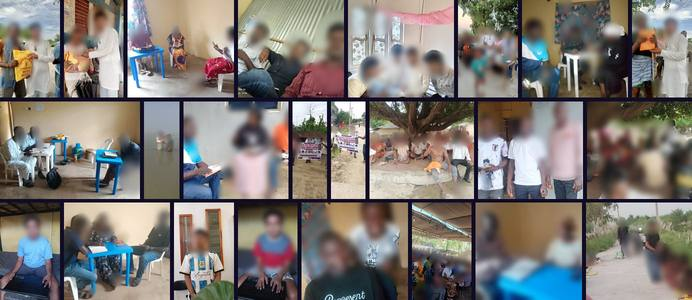

LangQuest · Singapore · October 2026
What if Bible translation could keep moving—wherever the work happens?
A field-tested way for local teams to record, review, and share Scripture in their own language.
→ to begin · G overview
The people
The work belongs to local teams.
They bring language, relationships, judgment, and commitment. A tool should support the work they already lead.
One partner's oral method, for example
The reality
But the field rarely follows a perfect plan.
A phrase
needs another conversation.A listener
hears a meaning the team did not intend.A key person
is away.The connection
disappears.Surprises are part of the work. The question is what the process does next.
A question for us
When a step fails, does the process break, pause, or learn?
Therefore
Make each correction useful.
Small passages
A revision stays manageable.Early review
Decisions are still fresh.Visible context
Notes and reasons travel with the work.Offline work
Recording continues without a signal.Shared knowledge
Work continues when people change.A process that learns makes problems easier to see and cheaper to fix.
What LangQuest does
LangQuest helps teams capture spoken work.
- Record Scripture on a mobile phone.
- Work passage by passage.
- Listen back and record a new take.
- Keep drafts on the phone when offline.
- Sync and share when connected.
Field proof · Use
audio clips recorded in LangQuest this year.
Count as of 9 October 2026.
Field proof · One partner
Every Language has put LangQuest to work.
languages started with LangQuest
languages active right now
Field proof · Completion
Two complete audio Bibles.
Bars drawn to scale.
Earlier this month, in Nepal
The book of Mark.
Six chapters of Micah.
Translated with LangQuest. The work keeps moving, passage by passage.
Teams using LangQuest
Across languages. Across regions.
And more.
Field proof · Teams at work
Just this September. Teams in the field.

24 photos uploaded by teams using LangQuest in September 2026. Faces are blurred.
Already in use. Already bearing fruit.
In their words
Every Language
Jeremy shares what happened in the field.
The new LangQuest
Built for the work around the recording.
Set up your process once. See what is done and what still needs attention.
From recording to listeners, and back
Feedback returns to the passage.
- Mark a passage ready. It can appear in a listening app right away.
- Listeners respond. Their feedback arrives on the same passage.
- Any app can connect: a listening app, or a simple web page shared on WhatsApp.
What the tool cannot do
Software cannot decide what quality means.
Communities and their trusted advisors make those decisions.
LangQuest makes work and review easier to follow. It does not replace local judgment or certify a translation.
Eight questions you may be askingEach one has an answer.
01 / 08
“How would our team actually do this?”
Follow a written process. Your method stays yours: we set it up in LangQuest together.Session 2 walks through every step.
02 / 08
“Who helps us when we get stuck?”
A named liaison for your organization, a technical help desk, and training for your first cycle.
03 / 08
“Who owns the recordings?”
Your organization does. Work starts as “All rights reserved”: only your members see it. You decide if and when to open it.
04 / 08
“Is our work private?”
Only members of your organization see it. Each role sets what a person can do. Start where privacy is less sensitive.
05 / 08
“How do we check quality?”
You choose the review steps: peer review, community check, back translation, consultant check. Each passage shows what it has cleared.
06 / 08
“We have no internet for weeks.”
Record and review offline. Each phone keeps its own copy and syncs when it connects.
07 / 08
“Our translators do not use email.”
Invite them with a QR code. One scan joins the team.
08 / 08
“Who pays for the translation work?”
Illuminations Asia intends to fund selected translation projects in Asia. LangQuest itself is already funded.
Every question has an answer.Anything else? Let's talk about it now.
The opportunity
Everything a project needs is ready.
Proven in the field
Already in use. Already funded.For translation in Asia
Illuminations Asia intends to fund selected projects.People and a process
A written process, a liaison, and a help desk.What remains is a decision.
What if
Forty organizations. Two or three languages each.
An invitation
Pick two or three languages.
Name a coordinator for each. Bring the process you trust. We will help you start.
Next session, for translation managers: how to run a LangQuest project, step by step →
Your language could be next.
LangQuest
Your language.
Your team.
The next passage.
Let's take the next step together.